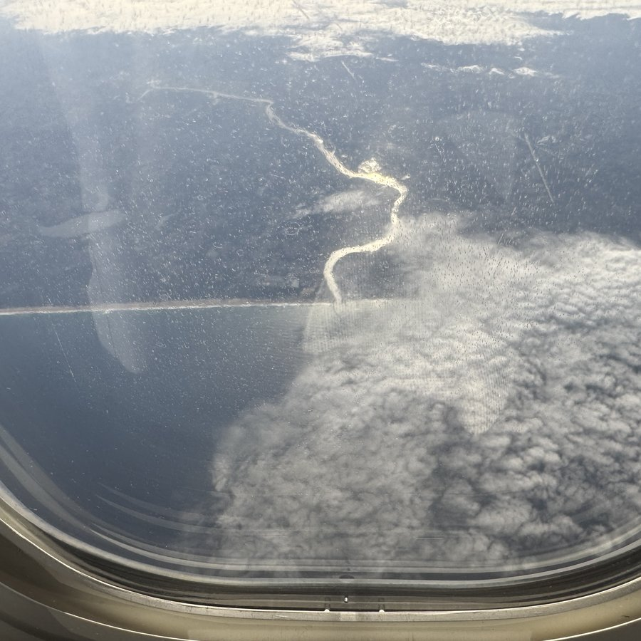
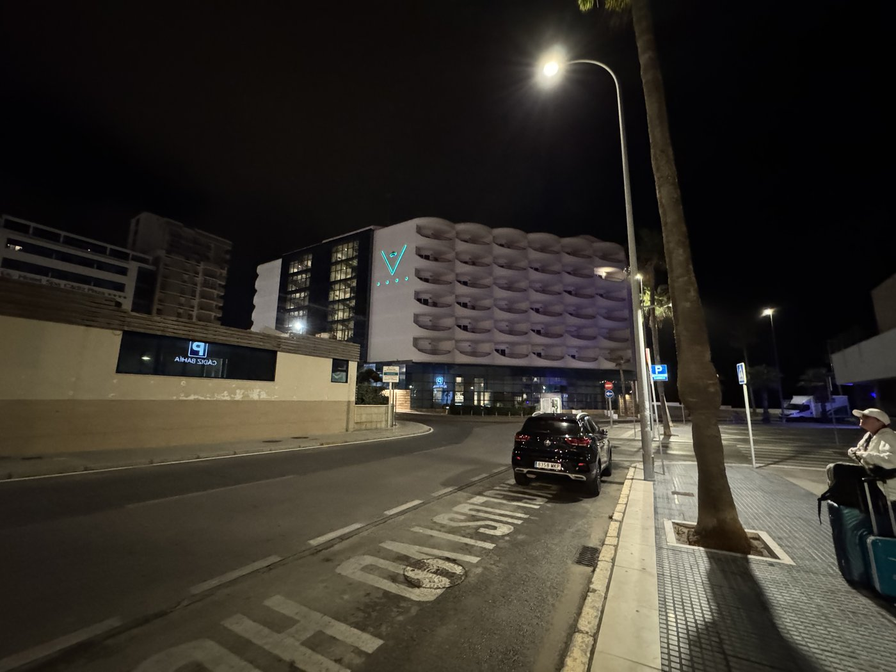
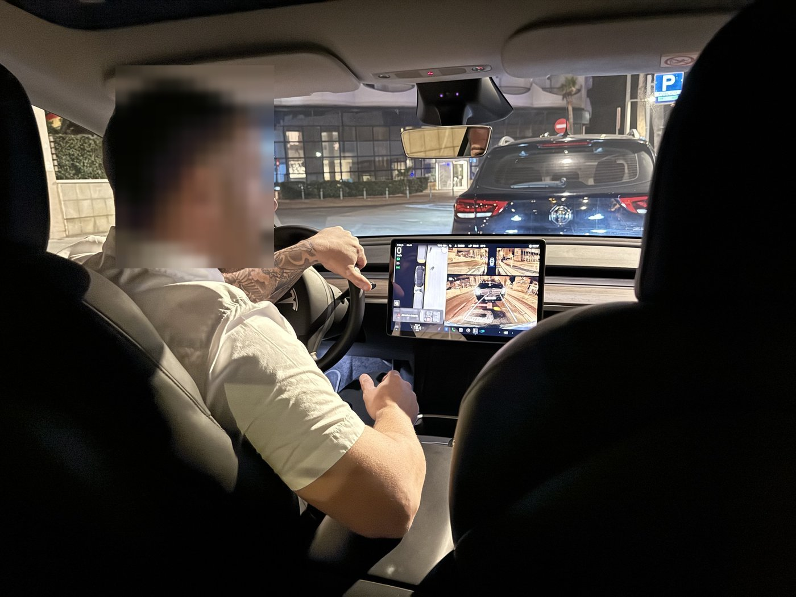
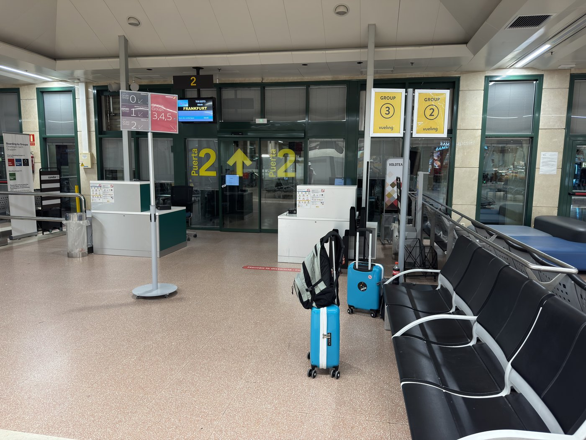
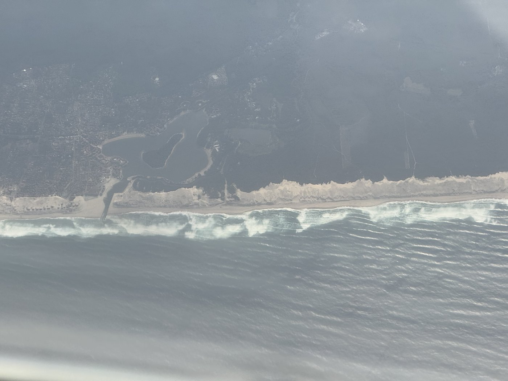
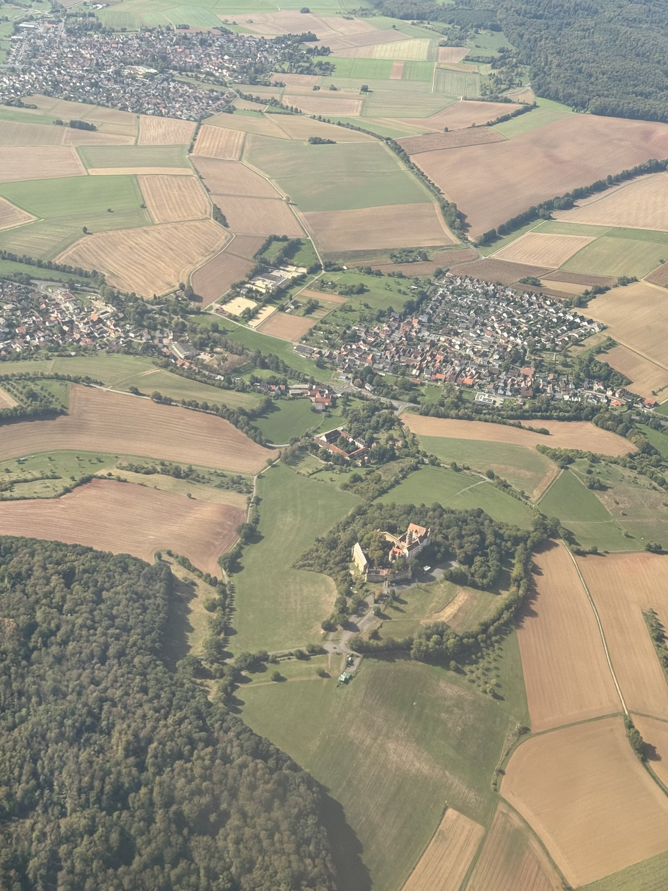

Keine alte Sau unterwegs um die unchristliche Uhrzeit. Naja, fast: ein paar Taxis und Leute, die zur Arbeit mußten, waren schon da.

Unser Privattransfer war schon klasse: Es kamen zwei Autos, ein Tesla und ein Minibus. Stellte sich heraus, daß das eine Tour war, die Leute von unserem Hotel — außer uns noch ein Pärchen — und vom Nachbarhotel abholte.
Die Fahrer waren Cousins. Und der Fahrer des Minibusses hatte heute seinen ersten Arbeitstag; sein Cousin hat ihn eingearbeitet.
Wir haben den Tesla bekommen. Ganz für uns allein.

Standesgemäß ging es dann mit Héroes del Silencio los, Entre Dos Tierras — öffnet YouTube in einem neuen Tab. Zwischen zwei Ländern. Passender geht es kaum.
Der verlinkte Song liegt bei YouTube, nicht hier. Ein Klick verläßt diese Seite; dort gelten andere Regeln für Cookies und Daten, und das Video gehört seinen Urhebern.
Ziemlich pünktlich waren wir am Flughafen — und kamen als allererste an diesem Tag dort an. Weder die Check-in-Schalter noch der Sicherheitsbereich waren besetzt. Lange warten mußten wir trotzdem nicht.

Leider haben wir uns darauf verlassen, daß man ja seit neuestem bis zu zwei Liter Flüssigkeit im Handgepäck haben darf. Aber nicht am Provinzflughafen Jerez. Wir mußten unsere Getränke abgeben und durften dann großzügigerweise drinnen neue kaufen.
Die Lockerung hängt an der Technik, nicht am Datum: Größere Behälter sind nur dort erlaubt, wo Scanner stehen, die Flüssigkeiten im Gepäck selbst prüfen können. Wo noch die alten Geräte laufen, gilt weiter die alte Grenze — und welcher Flughafen welche hat, sieht man dem Ticket nicht an.
Ich hätt's eigentlich wissen müssen. Immerhin: Alle, die nach uns kamen, hatten auch Getränke dabei, die sie abgeben mußten. Die Security kann heute abend Party feiern.
Dann saßen wir am Gate und warteten auf die Maschine aus Frankfurt. Die war schon kurz vor Sevilla, sollte also bald landen. Abflug war für 08:40 Uhr geplant.
Und dann ging's lo-hos.


Wir sind wieder daheim, die Koffer sind schon ausgepackt, die erste Waschmaschine läuft. Damit ist unser Cádiz-Urlaub 2026 offiziell zuende.
Cádiz hatte ich als Urlaubsziel gar nicht so auf der Pfanne. Es hat sich sowas von gelohnt.